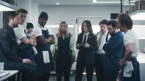
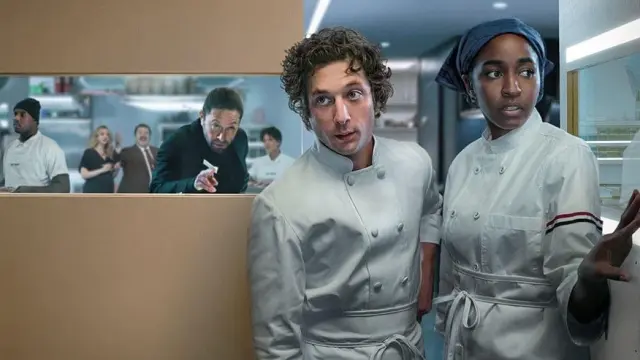

Carmy, Sydney y Richie intentando elevar el restaurante a un nivel de estrella Michelin
Enfrentando alta presión, traumas pasados y la evolución de sus relaciones profesionales y personales.

A diferencia de la temporada 2, esta se centra más en la introspección,
el día a día del funcionamiento del restaurante y el legado.
